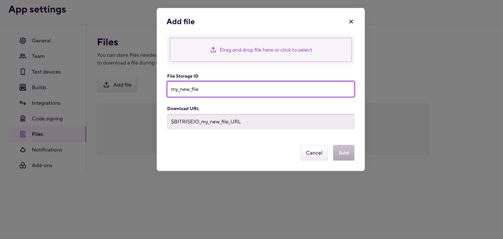
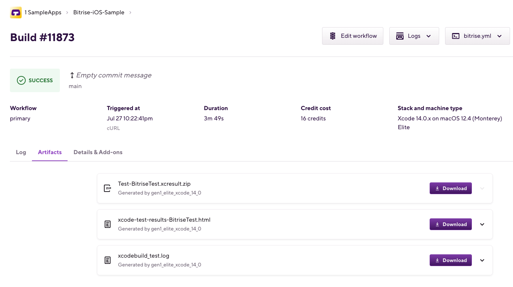
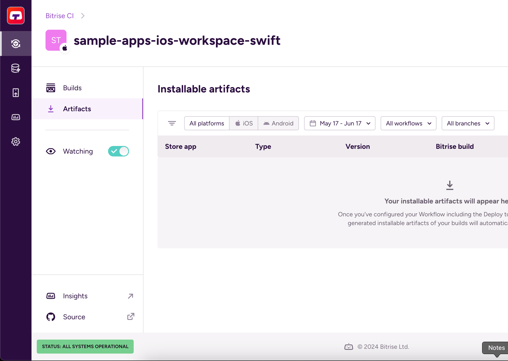
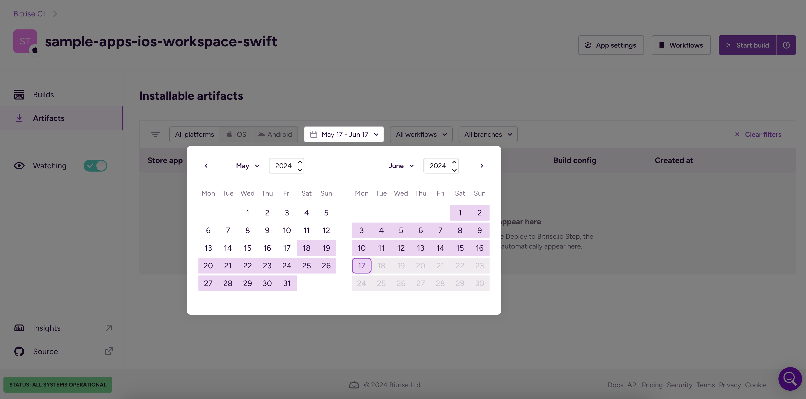

- Welcome to Bitrise documentation!
- Getting started
- Signing up for Bitrise
- Creating your first Workspace
- Adding a new app
- Webhooks and triggers
- Builds and Workflows
- Testing and deploying
- Migrating to Bitrise
- Signing up for Bitrise
- Creating your first Workspace
- Adding a new app
- Getting started with iOS apps
- Getting started with Android apps
- Getting started with React Native apps
- Getting started with Flutter apps
- Getting started with Ionic/Cordova apps
- Getting started with Expo apps
- Infrastructure
- Accounts
- Workspaces
- Apps
- Workflows and Pipelines
- Builds
- Code signing
- Testing
- iOS testing
- Android testing
- Flutter testing
- React Native testing
- Device testing with Firebase
- Test Reports
- Test Reports
- Exporting to Test Reports from any Step
- Running unit and UI tests for iOS apps
- Installing an .ipa file
- Registering test devices for iOS apps
- Device testing for iOS
- Running Android unit tests
- Device testing for Android
- Running tests in the Visual Studio App Center
- Running Detox tests on Bitrise
- Measuring your code coverage with Codecov
- Deploying
- Insights
- Bitrise CLI
- API
- References
- Getting started
- Bitrise Docs
Managing build files
Using the Deploy to bitrise.io Step, you can deploy files generated during a build to bitrise.io. You can also upload code signing files. You can view uploaded files on the Apps & Artifacts tab of the build page.
Managing files on Bitrise allows you to upload files to use in your builds. You are required to upload files for the purposes of code signing. Builds also produce files as outputs.
You can:
Upload files to the Generic File storage.
Use uploaded files in your builds.
Use encrypted files in your builds.
Using the Deploy to bitrise.io Step, you can deploy files generated during a build to bitrise.io. You can view these files on the Artifacts tab of the build page.
In addition, you can check out a build's generated installable artifacts (installable binaries, either IPA or APK/AAB) files on the Artifacts page of an app. The page shows all generated binaries from past builds and you can view the details of each file, including a QR code and a link to the public install page, both of which allow users to install the app on their devices.
You can also upload both Android and iOS code signing files. Read more about Android code signing and iOS code signing in our detailed guides.
Uploading files for your builds
If your build requires any files to make it work, you can upload them in the Code Signing tab of the Workflow Editor.
If your build requires any files to make it work, you can upload them to Bitrise on the App settings page. It accepts any file type, all you need to do is provide a unique ID and upload the file.
Once a file is uploaded, it is stored as an Environment Variable (Env Var). You can use this Env Var to access the file and use it in your builds. The file can also be:
Downloaded by anyone who has either admin or owner role on the app’s team on Bitrise. You can prevent this: Protecting your uploaded files
Exposed to pull request builds.
File restrictions
There are certain restrictions on upload size and number of files:
You can't upload a file bigger than 5 MB.
You can only store a total of 5 different files at the same time. If you want to upload more, you need to delete one of the files in the storage.
To upload a file:
Open your app on Bitrise with a user that has the Admin role on the app.
On the main page of the app, click on the App Settings icon:
 .
.
On the left, select Files.
Click .
In the dialog box, enter a unique ID in the File Storage ID input field.
The unique ID will be part of the generated download URL that Bitrise stores as an Environment Variable.
Upload the file. You have two options:
Click anywhere in the Select a file to upload section and select the file from your computer.
Drag and drop a file into the Select a file to upload section.
Remember that the file size cannot exceed 5 MB.
Protecting your uploaded files
Once you uploaded a file to Bitrise, you can set your uploaded files to Protected mode. This means that no one can download or reveal the file from your account but your builds can still use them. Bitrise will handle the Environment Variable attached to your uploaded files as a Secret.
Open your app on Bitrise with a user that has the Admin role on the app.
On the main page of the app, click on the App Settings icon:
.On the left, select Files.
Click the horizontal ellipsis button next to the name of the file, and select Make protected.
Click Make it protected in the dialog box.
Using files in your builds
To use a file in your builds, you can download it using a Step like File Downloader in your Workflow, or you can use the file's automatically generated Env Var as a Step input.
There are multiple ways to use files in your Bitrise builds.
Most Steps that generate files store the filepath in an output Environment Variable (Env Var). Subsequent Steps in the same Workflow can re-use that Env Var to access the file.
You can upload a file to the Generic File Storage and use the automatically generated Env Var as a Step input value in Steps that accept URLs as an input.
You can upload a file to the Generic File Storage and use one of our Steps (for example, the File Downloader Step) to download the file for the build. This works with Steps that require local file paths and as such do not support URLs directly as the input value.
Downloading a file using the File Downloader Step
One of the ways to access a file in your build is by using the File Downloader Step. This Step is useful when you need to use a file in a Step input that only accepts local paths as a value.
The Step downloads the file in a location you specify, and then every subsequent Step can access the file in that location.
Workflow Editor
bitrise.yml
Open the Workflow Editor.
Add the File Downloader Step to your Workflow.
In the Download source url input, add the location where the file can be found.
Finding the download URL for an uploaded file
If you uploaded the file to Bitrise, you can find its download URL in the Files section of the App settings page.
In the Download destination path input, specify the path where you want to download the file. It should be a path relative to the root of the repository.
Using an Env Var as the input value
You can store the filepath in an App Env Var instead of specifying it directly for the input. That way you can refer to the file through the Env Var in other Steps, you won’t have to specify the path every time.
For example, if you store the path in the
BITRISEIO_MY_FILE_LOCAL_PATHEnv Var, you can use it as the path for the input, and also use it to access the file in every subsequent Step.Click in the top right corner.
Open the app's
bitrise.ymlfile.Add the
file-downloaderStep to your Workflow.workflows: download: steps: - activate-ssh-key: {} - git-clone: {} - file-downloader: inputs:In the
sourceinput, add the location where the file can be found.workflows: download: steps: - activate-ssh-key: {} - git-clone: {} - file-downloader: inputs: - source: "$BITRISEIO_BITRISE_TEST_URL"In the
destinationinput, specify the path where you want to download the file. It should be a path relative to the root of the repository.workflows: download: steps: - activate-ssh-key: {} - git-clone: {} - file-downloader: inputs: - destination: "/" - source: "$BITRISEIO_BITRISE_TEST_URL" - deploy-to-bitrise-io: {}Using an Env Var as the input value
You can store the filepath in an App Env Var instead of specifying it directly for the input. That way you can refer to the file through the Env Var in other Steps, you won’t have to specify the path every time.
For example, if you store the path in the
BITRISEIO_MY_FILE_LOCAL_PATHEnv Var, you can use it as the path for the input, and also use it to access the file in every subsequent Step.
Downloading a file using a custom Script Step
If you don't want to use the File Downloader Step to download and access an uploaded file in your build, you can use your own custom Script Step as well. All you need to do is to get the download URL and then download the file by specifying a full download path that exists on the build machine.
Workflow Editor
bitrise.yml
Open your app on Bitrise.
Click the button on the main page.
On the Workflows & Pipelines page, find the Workflow you need and click into its row to open the Workflow Editor.

Add a Script Step to your Workflow.
Find the Script content input of the Step.
Add a script to download the file and store the destination path in an Env Var.
Uploading the file to Bitrise
If you upload the file to Bitrise, you can use the file's download URL in your script.
In the example below, the download URL is stored in the
BITRISE_IO_MY_FILE_ID_URLEnv Var. We're using envman to store the destination path in theBITRISEIO_MY_FILE_LOCAL_PATHEnv Var. Subsequent Steps can use this Env Var to access the file.#!/bin/bash set -ex # specify local download path export file_local_path=download/path/to/my/file # download the file wget -O "$file_local_path" "$BITRISEIO_MY_FILE_ID_URL" echo "file downloaded to: $file_local_path" # OPTIONALLY: export the file's local path, to be able to use it in subsequent steps as an input value envman add --key BITRISEIO_MY_FILE_LOCAL_PATH --value "$file_local_path"
Alternatively, for example, you can set the location as an App Env Var and simply download it to that path instead of defining the path inside the Script Step.
Open the
bitrise.ymlfile of your app.Add a
scriptStep to your Workflow.my-workflow: steps: script: inputs: - content:In the
contentinput, add a script to download the file and store the destination path in an Env Var.Uploading the file to Bitrise
If you upload the file to Bitrise, you can use the file's download URL in your script.
In the example below, the download URL is stored in the
BITRISE_IO_MY_FILE_ID_URLEnv Var. We're using envman to store the destination path in theBITRISEIO_MY_FILE_LOCAL_PATHEnv Var. Subsequent Steps can use this Env Var to access the file.my-workflow: steps: - script: inputs: - content: #!/bin/bash set -ex # specify local download path export file_local_path=download/path/to/my/file # download the file wget -O "$file_local_path" "$BITRISEIO_MY_FILE_ID_URL" echo "file downloaded to: $file_local_path"Alternatively, for example, you can set the location as an App Env Var and simply download it to that path instead of defining the path inside the Script Step.
Optionally, export the file's local path so you can use it in subsequent Steps in the same Workflow.
my-workflow: steps: - script: inputs: - content: #!/bin/bash set -ex # specify local download path export file_local_path=download/path/to/my/file # download the file wget -O "$file_local_path" "$BITRISEIO_MY_FILE_ID_URL" echo "file downloaded to: $file_local_path" # export the file path for subsequent steps envman add --key BITRISEIO_MY_FILE_LOCAL_PATH --value "$file_local_path"
Using encrypted files in your builds
You can use encrypted files on Bitrise, easily. After encrypting the file on your computer, upload it to the Generic File Storage and use the Decrypt file Step or your own custom decrypting solution to decrypt it when you need it.
You can use encrypted files on Bitrise, easily and securely. All you need to do is encrypt the file on your computer, upload it to the Generic File Storage and use the Decrypt file Step or your own custom decrypting solution to decrypt it when you need it.
GPG encryption
Please note that the Decrypt file Step only decrypts files encrypted with GPG. If you use other encryption software, you will not be able to decrypt files using the Step. You can, of course, set up your own decryption solution in a Script Step.
Encrypting your files
In this example, we’ll use the pwgen password generator tool and GPG as the encryption software to encrypt a file.
Open a Terminal/Command Line.
Create a 32 character passphrase for encryption.
Keep the passphrase
You will need this passphrase to decrypt the file on Bitrise.
pwgen -s 32 1
Encrypt your file. In this example, the file is called
my_secret_file.gpg -c my_secret_file
Optionally, you can encrypt your file(s) in a non-interactive way.
gpg --batch --passphrase <passphrase> -c my_secret_file
Decrypting and downloading your files during a build
After you successfully encrypted a file, you need to upload it to Bitrise and you need to be able to decrypt it during the build. In this procedure, we'll use the Decrypt file Step to decrypt the file.
GPG encryption
Please note that the Decrypt file Step only decrypts files encrypted with GPG. If you use other encryption software, you will not be able to decrypt files using the Step. You can, of course, set up your own decryption solution in a Script Step.
Open your app on Bitrise.
Click the button on the main page.

On the Workflows & Pipelines pages, you can:
Click the button to get to the bitrise.yml tab of the Workflow Editor.
Select a Workflow from the list of the app's Workflows.
Go to the Secrets tab, and add your decryption passphrase as a Secret.
Copy the Environment Variable (Env Var) under the name of the uploaded file. This Env Var stores the download URL for the file.
Go to the Workflows tab.
Open the Workflow Editor.
Add the Decrypt file Step to your Workflow.
Paste the Env Var of the file to the Encrypted file path input.
In the Output file path input, specify the path where you want to place the decrypted file. Subsequent Steps will be able to access the file at this path.
Using an Env Var as the input value
You can store the filepath in an App Env Var instead of specifying it directly for the input. That way you can refer to the file through the Env Var in other Steps, you won’t have to specify the path every time.
For example, if you store the path in the
BITRISEIO_MY_FILE_LOCAL_PATHEnv Var, you can use it as the path for the input, and also use it to access the file in every subsequent Step.
---
format_version: '11'
default_step_lib_source: https://github.com/bitrise-io/bitrise-steplib.git
project_type: macos
workflows:
secret:
steps:
- activate-ssh-key@4: {}
- git-clone@6: {}
- decrypt-file@0:
inputs:
- encrypted_file_path: "./secret.txt.gpg"
- output_file_path: "./secret/"
- decrypt_passphrase: "$PASSWORD_FOR_ENCRYPT"
- deploy-to-bitrise-io@2: {}Build artifacts online
A build on Bitrise can and often does produce artifacts: for example, test reports, images, executable binaries. If you select a build of your app, on the Artifacts tab, you can check out the artifacts which have been generated during the build.
Build artifacts are any files generated during a Bitrise build: test results, screenshots, executable binaries, and so on. You can view build artifacts at two places:
On the Artifacts tab of the build's page. Here you can view all artifacts.
The Artifacts page on the main page of the app. Here you can only see the installable binaries.

There is no limitation on the number of files deployed to the Artifacts tab per build. There is a limitation, however, on the file size which is 2GB per file.
Artifact retention for 365 days
Artifacts older than 365 days are permanently deleted.
The Installable artifacts page
On the Installable artifacts page, you can:
View the installable binaries of past builds.
Download the installable artifacts.
Check the details page of these artifacts. This can include a public install page.
To get to the page, log in to Bitrise, select the Workspace that owns the app, and open Bitrise CI. Select your app and you can see Artifacts on the left.
You can filter your installable artifacts using several different filters:
Platform of your binary (iOS or Android).
The timeframe of the build that generated it.
The Workflow the build ran on.
The branch of the repository that was built.
Artifact details
You can check the details of any installable artifact (a binary, either an IPA or an APK/AAB file) generated by a Bitrise build. The details can potentially include:
The exact filename.
The version of the binary.
Metadata such as time of creation and file size.
A QR code for installation.
A link to the public install page if it is enabled.
To get to the details page, open the Artifacts page and select your file from the Installable artifacts list.
On the details page itself, the most important thing you can do is install the app on a mobile device. This is particularly useful for testing purposes. You have two options:
A QR code: scan it to install the binary.
A link to the public install page.
Note that if you're trying to install an iOS app on a device, the device must be registered for the app on the Apple Developer Portal. You can see the available devices in the Who can install this app? section.
Deploying files into artifacts
Artifacts are deployed into the Artifacts section in your build’s page with the help of the Deploy to Bitrise.io Step. It deploys all the files which have been generated during the build and stores them in the $BITRISE_DEPLOY_DIR directory.
To deploy the artifacts, insert the Deploy to Bitrise.io Step AFTER the Step(s) that generate the artifacts or even better if the Deploy to Bitrise.io Step is at the very end of your Workflow.
Put the Step in the right place
Add the Deploy to Bitrise.io Step in the right place. If you insert the Step before other Steps that generate files during the build, then Deploy to Bitrise.io will have nothing to deploy.
Note that the content of any sub-directories found in the deploy directory will not be displayed in the Artifacts section of your build. You can, however, compress your artifacts into a zip file if you modify the default false value to true in the Compress the artifacts into one file field in the Deploy to Bitrise.io Step. This will compress the whole directory along with its sub-directories and deploy to Artifacts.
Modifying the target directory path
You can modify the target directory path to another one but make sure you reference the same directory paths in other Steps of your Workflow to ensure that the generated files get collected to the same directory.
Viewing artifacts if your build has failed
With the Run if previous Step failed toggle enabled, you can access your build artifacts - only those that have been successfully generated - even if your build has failed. For example, you can detect bugs in your failed build by looking into the generated test report files.
Who can access build artifacts?
The artifacts at Artifacts are accessible for everyone who is the owner, admin, developer, tester/QA of the app. Besides these roles, if you keep the default config of the Enable public page for the App feature, then anyone who receives the URL, will be able to access your app and its artifacts.